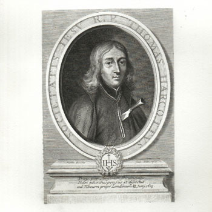

Isusovački blaženici
Svećenik
Bl. Toma Whitbread
1618. – 1679.
Isusovački provincijal odbio je prihvatiti neprikladna kandidata Titusa Oatesa. Postao je žrtvom njegovih izmišljenih optužbi i s četvoricom subraće pogubljen u Tyburnu.
Tekst je preveden i prilagođen uz pomoć umjetne inteligencije.

Izvor slike
- Spomendan
- 30. lipnja
- Zaštitništvo
- Nije navedeno u izvoru
- Životni vijek
- 1618. – 1679.
- Djelovanje
- Progoni i progonstvo · Mučeništvo
- Razdoblje
- 17. stoljeće
- Ulazak u Družbu Isusovu
- 1635.
- Svećeničko ređenje
- 1645.
- Rođenje — dostupni podaci
- 1618.; dan i mjesec nisu potvrđeni u provjerenom izvoru.
- Mjesto rođenja
- Essex, Engleska
- Datum smrti
- 30.06.1679.
- Mjesto smrti/mučeništva
- Tyburn, London, Engleska
- Okolnosti smrti/mučeništva
- Pogubljen vješanjem i sakaćenjem zbog katoličkoga svećeništva i djelovanja za progona.
- Uloga
- Svećenik
- Mučenik
- Da
- Ostale oznake
- Žrtva izmišljene Papističke urote Titusa Oatesa
- Pripadnost
- Isusovac
- Razlike u izvorima
- Datum smrti u podatcima zbirke: 30.06.1679. Raniji biografski izvor navodi 20.06.1679. Razlika izvora nije razriješena.
- Drugi oblici imena
- Thomas Whitbread · Thomas
Životopis
Toma Whitbread rođen je 1618. u Essexu. Kao dvanaestogodišnjak 1630. došao je u Saint-Omer, gdje su engleski katolici mogli steći obrazovanje nedostupno u domovini. U Družbu Isusovu stupio je 1635., zaređen je 1645. i od 1647. više od trideset godina služio u engleskoj misiji. U tajnosti je koristio ime Thomas Harcourt. Godine 1678. postao je provincijal i iz Londona obilazio kuće u kojima su se pripravljali budući misionari.
Toga je ljeta u Liègeu s bogoslovima razgovarao o spremnosti na zatvor i nepravednu osudu, premda je političko ozračje djelovalo mirnije. Obilazio je i sjemenište u Wattenu. U Saint-Omeru je odbio Titusa Oatesa kao neprikladna kandidata za red. Oates je potom s Israelom Tongeom izmislio isusovačku urotu protiv Karla II., koristeći poznavanje redovničkoga života kako bi laž učinio uvjerljivijom. Optužbe su izazvale progon daleko izvan njegove neposredne okoline.
Whitbread je uhićen 29. rujna 1678. s Edvardom Micom dok su obojica bolovala od kuge. Mico je umro, a Whitbread kasnije završio u Newgateu. U zatvoru nije ostao usredotočen samo na vlastitu opasnost: glazbom i pjevanjem pružao je utjehu drugim zatočenicima. Na sudu se stvarni redovnički sastanak, sazvan radi izbora izaslanika Rimu, prikazivao kao zavjerenički skup. Šesnaest svjedoka iz Saint-Omera pobijalo je Oatesove tvrdnje.
Ipak je s Johnom Fenwickom, Williamom Harcourtom, Johnom Gavanom i Antunom Turnerom osuđen. U Tyburnu je 20. lipnja 1679. oprostio lažnim svjedocima. Ponuđeno pomilovanje zahtijevalo je priznanje nepostojeće urote; odbio je spasiti život laži. Prijatelji su ishodili pokop kod sv. Gilesa. Beatificiran je 1929., a njegove relikvije čuvaju trajno sjećanje na to svjedočanstvo.
Tekst je preveden i prilagođen uz pomoć umjetne inteligencije.
Pročitaj više na izvornoj stranici ↗